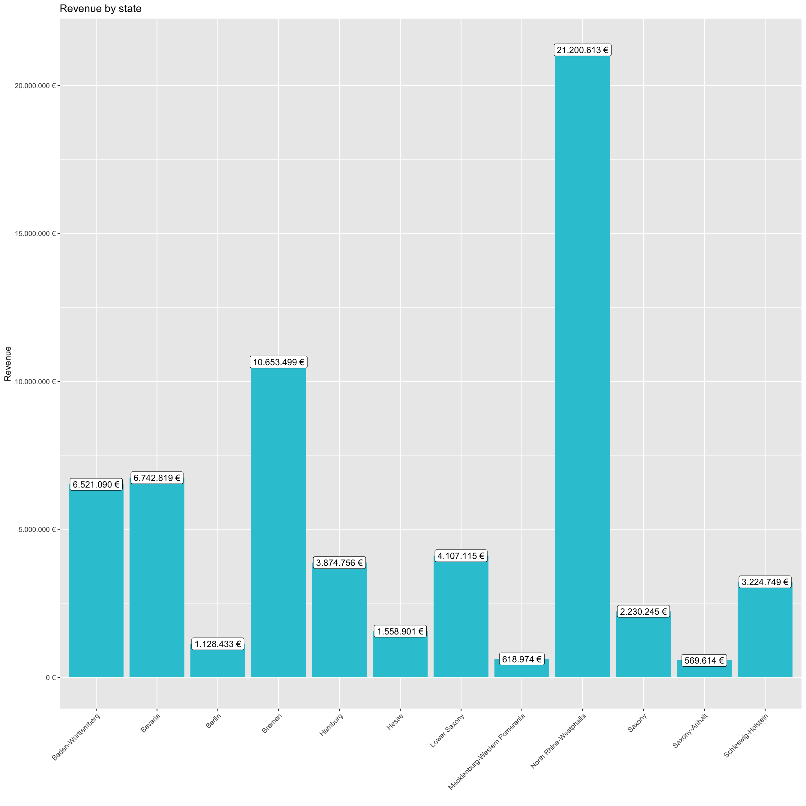

# 1.0 Load libraries ----
library(tidyverse)
library(readxl)
library(lubridate)
# 2.0 Importing Files ----
bikes_tbl <- read_excel("00_data/01_bike_sales/01_raw_data/bikes.xlsx")
orderlines_tbl <- read_excel("00_data/01_bike_sales/01_raw_data/orderlines.xlsx")
bikeshops_tbl <- read_excel("00_data/01_bike_sales/01_raw_data/bikeshops.xlsx")
# 3.0 Examining Data ----
# 4.0 Joining Data ----
bike_orderlines_joined_tbl <- orderlines_tbl %>%
left_join(bikes_tbl, by = c("product.id" = "bike.id")) %>%
left_join(bikeshops_tbl, by = c("customer.id" = "bikeshop.id"))
# 5.0 Wrangling Data ----
bike_orderlines_wrangled_tbl <- bike_orderlines_joined_tbl %>%
separate(col = "location",
into = c("city", "state"),
sep = ", ") %>%
mutate(total_price = quantity * price) %>%
select(-...1, -gender, -ends_with(".id")) %>%
bind_cols(bike_orderlines_joined_tbl %>% select(order.id)) %>%
select(order.id,
contains("order"),
contains("model"),
contains("category"),
price,
quantity,
total_price,
everything()) %>%
rename("bikeshop" = "name") %>%
set_names(names(.) %>% str_replace_all("\\.", "_"))
# 6.0 Business Insights ----
# 6.1 Analyze the sales by location (state) with a bar plot. ----
# Since state and city are multiple features (variables), they should be
# split. Which state has the highest revenue?
# Step 1 - Manipulate
sales_by_state_tbl <- bike_orderlines_wrangled_tbl %>%
select(total_price, state) %>%
group_by(state) %>%
summarize(sales = sum(total_price)) %>%
mutate(sales_text = scales::dollar(sales, big.mark = ".",
decimal.mark = ",",
prefix = "",
suffix = " €"))
# Step 2 - Visualize
sales_by_state_tbl %>%
ggplot(aes(x = state, y = sales)) +
geom_col(fill = "#2DC6D6") +
geom_label(aes(label = sales_text)) +
geom_smooth(method = "lm", se = FALSE) +
scale_y_continuous(labels = scales::dollar_format(big.mark = ".",
decimal.mark = ",",
prefix = "",
suffix = " €")) +
theme(axis.text.x = element_text(angle = 45, hjust = 1)) +
labs(
title = "Revenue by state",
x = "",
y = "Revenue"
)
# 6.2 Analyze the sales by location and year (facet_wrap). ----
# Step 1 - Manipulate
sales_by_year_state_tbl <- bike_orderlines_wrangled_tbl %>%
transmute(year = year(order_date), total_price, state) %>%
group_by(year, state) %>%
summarize(sales = sum(total_price)) %>%
ungroup() %>%
mutate(sales_text = scales::dollar(sales, big.mark = ".",
decimal.mark = ",",
prefix = "",
suffix = " €"))
# Step 2 - Visualize
sales_by_year_state_tbl %>%
ggplot(aes(x = year, y = sales, fill = state)) +
geom_col() +
facet_wrap(~ state) +
scale_y_continuous(labels = scales::dollar_format(big.mark = ".",
decimal.mark = ",",
prefix = "",
suffix = " €")) +
theme(axis.text.x = element_text(angle = 45, hjust = 1)) +
labs(
title = "Revenue by year and state",
fill = "Main category"
)# Get some data via an API ----
# 1.0 LIBRARIES ----
library(httr)
library(glue)
library(jsonlite)
# 2.0 GET DATA ----
# Get information about countries
response <- GET("https://restcountries.eu/rest/v2/all")
countries <- response$content %>%
rawToChar() %>%
fromJSON() %>%
as_tibble()
head(countries, 10)## # A tibble: 10 x 24
## name topLevelDomain alpha2Code alpha3Code callingCodes capital altSpellings region subregion
## <chr> <list> <chr> <chr> <list> <chr> <list> <chr> <chr>
## 1 Afgh… <chr [1]> AF AFG <chr [1]> "Kabul" <chr [2]> Asia "Souther…
## 2 Ålan… <chr [1]> AX ALA <chr [1]> "Marie… <chr [4]> Europe "Norther…
## 3 Alba… <chr [1]> AL ALB <chr [1]> "Tiran… <chr [4]> Europe "Souther…
## 4 Alge… <chr [1]> DZ DZA <chr [1]> "Algie… <chr [3]> Africa "Norther…
## 5 Amer… <chr [1]> AS ASM <chr [1]> "Pago … <chr [4]> Ocean… "Polynes…
## 6 Ando… <chr [1]> AD AND <chr [1]> "Andor… <chr [3]> Europe "Souther…
## 7 Ango… <chr [1]> AO AGO <chr [1]> "Luand… <chr [3]> Africa "Middle …
## 8 Angu… <chr [1]> AI AIA <chr [1]> "The V… <chr [1]> Ameri… "Caribbe…
## 9 Anta… <chr [1]> AQ ATA <chr [1]> "" <chr [0]> Polar ""
## 10 Anti… <chr [1]> AG ATG <chr [1]> "Saint… <chr [1]> Ameri… "Caribbe…
## # … with 24 more variables: population <int>, latlng <list>, demonym <chr>, area <dbl>,
## # gini <dbl>, timezones <list>, borders <list>, nativeName <chr>, numericCode <chr>,
## # currencies <list>, languages <list>, translations$de <chr>, $es <chr>, $fr <chr>,
## # $ja <chr>, $it <chr>, $br <chr>, $pt <chr>, $nl <chr>, $hr <chr>, $fa <chr>, flag <chr>,
## # regionalBlocs <list>, cioc <chr># Scrape one of the competitor websites of canyon and create a small database.
# I chose Rose Bikes
# 1.0 LIBRARIES ----
library(tidyverse) # Main Package - Loads dplyr, purrr, etc.
library(rvest) # HTML Hacking & Web Scraping
library(xopen) # Quickly opening URLs
library(jsonlite) # converts JSON files to R objects
library(glue) # concatenate strings
library(stringi) # character string/text processing
# library(dplyr)
# 1.1 COLLECT PRODUCT FAMILIES ----
url_home <- "https://www.rosebikes.de/fahrräder"
# xopen(url_home) # Open links directly from RStudio to inspect them
# Read in the HTML for the entire webpage
html_home <- read_html(url_home)
# Web scrape the ids for the families
bike_family_name_tbl <- html_home %>%
# Get the nodes for the families ...
html_nodes(css = ".catalog-navigation__link") %>%
# ... and extract the information of the id attribute
html_text() %>%
stringr::str_replace_all("\\n", "") %>%
# Remove the product families Gear and Outlet and Woman
# (because the female bikes are also listed with the others)
discard(.p = ~stringr::str_detect(.x,"Sale|Bike-Finder")) %>%
# Convert vector to tibble
enframe(name = "product_family_id", value = "product_family")
# 1.2 COLLECT PRODUCT CATEGORIES ----
# Web scrape the ids for the urls of the families
bike_family_url_tbl <- html_home %>%
# Get the nodes for the families ...
html_nodes(css = ".catalog-navigation__link") %>%
# ... and extract the information of the id attribute
html_attr('href') %>%
# Remove the product families Gear and Outlet and Woman
# (because the female bikes are also listed with the others)
discard(.p = ~stringr::str_detect(.x,"/fahrräder/sale|/zoovu")) %>%
# Convert vector to tibble
enframe(name = "product_family_id", value = "subdirectory") %>%
# Add the domain, because we will get only the subdirectories
mutate(
url = glue("https://www.rosebikes.de{subdirectory}")
)
# Combine tibbles with names and URLs of the product families
bike_family_tbl <- bike_family_name_tbl %>%
left_join(bike_family_url_tbl)
# 3.0
get_bike_category_tbl <- function(subdirectory_family) {
url_family <- glue("https://www.rosebikes.de{subdirectory_family}")
# xopen(url_family) # Open links directly from RStudio to inspect them
# Read in the HTML for the product family page
html_family <- read_html(url_family)
# Names
# Web scrape the ids for the families
bike_category_name_tbl <- html_family %>%
# Get the nodes for the families ...
html_nodes(css = ".catalog-navigation__link") %>%
# ... and extract the information of the id attribute
html_text() %>%
stringr::str_replace_all("\\n", "") %>%
# Remove the product families Gear and Outlet and Woman
# (because the female bikes are also listed with the others)
discard(.p = ~stringr::str_detect(.x,"Alle")) %>%
# Convert vector to tibble
enframe(name = "position", value = "product_family")
# URLs
# Web scrape the ids for the URLs of the categories
bike_category_url_tbl <- html_family %>%
# Get the nodes for the families ...
html_nodes(css = ".catalog-navigation__link") %>%
# ... and extract the information of the id attribute
html_attr('href') %>%
# Remove the first URL since it's the same as the subdirectory
discard(.p = ~stringr::str_ends(.x, subdirectory_family)) %>%
# Convert vector to tibble
enframe(name = "position", value = "subdirectory") %>%
# Add the domain, because we will get only the subdirectories
mutate(
url = glue("https://www.rosebikes.de{subdirectory}")
)
# Combine tibbles with names and URLs of the product categories
bike_category_tbl <- bike_category_name_tbl %>%
left_join(bike_category_url_tbl) %>%
# Delete positions
select(-position)
}
test <- map(bike_family_tbl$subdirectory, get_bike_category_tbl)
# 4.0
get_bike_data <- function(subdirectory_id) {
subdirectory_family <- bike_family_tbl$subdirectory[subdirectory_id]
url_family <- glue("https://www.rosebikes.de{subdirectory_family}")
# xopen(url_family) # Open links directly from RStudio to inspect them
# Read in the HTML for the product family page
html_family <- read_html(url_family)
# Names
# Web scrape the ids for the families
bike_name_tbl <- html_family %>%
# Get the nodes for the families ...
html_nodes(css = ".catalog-category-bikes__title-text") %>%
# ... and extract the information of the id attribute
html_text() %>%
stringr::str_replace_all("\\n", "") %>%
# Convert vector to tibble
enframe(name = "position", value = "name")
# Descriptions
# Web scrape the ids for the families
bike_description_tbl <- html_family %>%
# Get the nodes for the families ...
html_nodes(css = ".catalog-category-bikes__subtitle") %>%
# ... and extract the information of the id attribute
html_text() %>%
stringr::str_replace_all("\\n", "") %>%
# Convert vector to tibble
enframe(name = "position", value = "description")
# Prices
# Web scrape the ids for the families
bike_price_tbl <- html_family %>%
# Get the nodes for the families ...
html_nodes(css = ".catalog-category-bikes__price-title") %>%
# ... and extract the information of the id attribute
html_text() %>%
# Extract numbers
stringr::str_extract(pattern = "[0-9].[0-9]*,[0-9]*") %>%
stringr::str_replace_all(pattern = "[.]", replacement = "") %>%
stringr::str_replace_all(pattern = ",", replacement = ".") %>%
as.numeric() %>%
# Convert vector to tibble
enframe(name = "position", value = "price_from")
# Create tibble with id of subdirectory
product_family_id <- NULL
for (i in c(1:nrow(bike_price_tbl))) {
product_family_id[i] = subdirectory_id;
}
product_family_id_tbl <- enframe(product_family_id, name = "position", value = "product_family_id")
# Combine tibbles with names, descriptions and prices of the product categories
bike_tbl <- bike_name_tbl %>%
left_join(bike_description_tbl) %>%
left_join(bike_price_tbl) %>%
left_join(product_family_id_tbl) %>%
# Delete positions
select(-position)
}
bike_data_lst <- map(1:nrow(bike_family_tbl), get_bike_data)
bike_data_tbl <- bind_rows(bike_data_lst)
bike_data_all_tbl <- bike_data_tbl %>%
left_join(bike_family_tbl) %>%
# Delete product_family_id, subdirectory and url
select(-product_family_id, -subdirectory, -url) %>%
# Sort by name
arrange(name)
head(bike_data_all_tbl, 10)## # A tibble: 10 x 4
## name description price_from product_family
## <chr> <chr> <dbl> <chr>
## 1 "ACTIVA PRO" Purer Fahrspaß dank technischer Raffinesse zum … 2399 Reise
## 2 "ACTIVA PRO PINIO… Das Rundum-sorglos-Paket mit wartungsarmen Pini… 3099 Reise
## 3 "BACKROAD" Vielseitiges Carbon-Gravelbike für dein nächste… 2599 Gravel
## 4 "BACKROAD AL" Das Alu-Gravelbike mit kompromisslosem Design z… 1549 Gravel
## 5 "BACKROAD AL RAND… Der vielseitige Wegbegleiter 1999 Reise
## 6 "BACKROAD LIMITED" Der Topseller in limitierter Lackierung für höc… 4599 Gravel
## 7 "BACKROAD RANDONN… Der vielseitigste Wegbegleiter auf deiner Reise… 2999 Reise
## 8 "BLACK LAVA " Das stylische Urban-Trekkingbike 1599 Trekking
## 9 "COUNT SOLO" Das Topseller-Hardtail für Gelände und Alltag NA MTB
## 10 "CPTL" Leichtes Carbon-Citybike mit Statement-Garantie 2599 Urban# 1. Patent Dominance: What US company / corporation has the most patents? List
# the 10 US companies with the most assigned/granted patents.
# 2. Recent patent activity: What US company had the most patents granted in
# 2019? List the top 10 companies with the most new granted patents for 2019.
# 3. Innovation in Tech: What is the most innovative tech sector? For the top 10
# companies (worldwide) with the most patents, what are the top 5 USPTO tech
# main classes?
# Question Table
# 1 assignee, patent_assignee
# 2 assignee, patent_assignee, patent
# 3 assignee, patent_assignee, uspc
# 1.0 LIBRARIES ----
library(tidyverse)
library(vroom)
library(lubridate)
# 2.0 DATA IMPORT ----
# 2.1 assignee ----
col_types <- list(
id = col_character(),
type = col_skip(),
name_first = col_skip(),
name_last = col_skip(),
organization = col_character()
)
assignee_tbl <- vroom(
file = "00_data/patent_data/assignee.tsv",
delim = "\t",
col_types = col_types,
na = c("", "NA", "NULL")
)
# 2.2 patent ----
col_types <- list(
id = col_character(),
type = col_character(),
number = col_skip(),
country = col_skip(),
date = col_date("%Y-%m-%d"),
abstract = col_skip(),
title = col_skip(),
kind = col_skip(),
num_claims = col_skip(),
filename = col_skip(),
withdrawn = col_skip()
)
patent_tbl <- vroom(
file = "00_data/patent_data/patent.tsv",
delim = "\t",
col_types = col_types,
na = c("", "NA", "NULL")
)
# 2.3 patent_assignee ----
col_types <- list(
patent_id = col_character(),
assignee_id = col_character(),
location_id = col_character()
)
patent_assignee_tbl <- vroom(
file = "00_data/patent_data/patent_assignee.tsv",
delim = "\t",
col_types = col_types,
na = c("", "NA", "NULL")
)
# 2.4 uspc ----
col_types <- list(
uuid = col_skip(),
patent_id = col_character(),
mainclass_id = col_character(),
subclass_id = col_skip(),
sequence = col_skip()
)
uspc_tbl <- vroom(
file = "00_data/patent_data/uspc.tsv",
delim = "\t",
col_types = col_types,
na = c("", "NA", "NULL")
)
# 2.5 location ----
col_types <- list(
id = col_character(),
city = col_skip(),
state = col_skip(),
country = col_character(),
latitude = col_skip(),
longitude = col_skip(),
county = col_skip(),
state_fips = col_skip(),
county_fips = col_skip()
)
location_tbl <- vroom(
file = "00_data/patent_data/location.tsv",
delim = "\t",
col_types = col_types,
na = c("", "NA", "NULL")
)
# 3.0 DATA WRANGLING
# Joining tibbles
patent_data_tbl <- patent_tbl %>%
left_join(patent_assignee_tbl, by = c("id" = "patent_id")) %>%
left_join(assignee_tbl, by = c("assignee_id" = "id")) %>%
left_join(location_tbl, by = c("location_id" = "id")) %>%
mutate(year = year(date)) %>%
select(id, type, year, organization, country) %>% #, mainclass_id) %>%
distinct()
# 4.0 FINDINGS
# 4.1 Patent dominance
patent_dominance_us_tbl <- patent_data_tbl %>%
# Filter out non-US companies
filter(country == "US") %>%
# Filter out NAs
filter(!is.na(organization)) %>%
# Count patents per organization
count(organization, sort = TRUE) %>%
# Rename the column with numbers of patents
rename(number_patents = n)
head(patent_dominance_us_tbl, 10)## # A tibble: 10 x 2
## organization number_patents
## <chr> <int>
## 1 International Business Machines Corporation 139053
## 2 General Electric Company 46865
## 3 Intel Corporation 42113
## 4 Hewlett-Packard Development Company, L.P. 35531
## 5 Microsoft Corporation 30074
## 6 Micron Technology, Inc. 27990
## 7 QUALCOMM Incorporated 24664
## 8 Texas Instruments Incorporated 24178
## 9 Xerox Corporation 23162
## 10 Apple Inc. 21801# 4.2 Recent patent activity
patent_dominance_us_2019_tbl <- patent_data_tbl %>%
# Filter out non-US companies
filter(country == "US") %>%
# Filter out NAs
filter(!is.na(organization)) %>%
# Filter data for 2019
filter(year == 2019) %>%
# Count patents per organization
count(organization, sort = TRUE) %>%
# Rename the column with numbers of patents
rename(number_patents = n)
head(patent_dominance_us_2019_tbl, 10)## # A tibble: 10 x 2
## organization number_patents
## <chr> <int>
## 1 International Business Machines Corporation 9262
## 2 Intel Corporation 3517
## 3 Microsoft Technology Licensing, LLC 3103
## 4 Apple Inc. 2809
## 5 Ford Global Technologies, LLC 2623
## 6 Amazon Technologies, Inc. 2532
## 7 QUALCOMM Incorporated 2354
## 8 Google Inc. 2286
## 9 General Electric Company 1857
## 10 Hewlett-Packard Development Company, L.P. 1589# 4.3 Innovation in Tech
innovation_main_classes_tbl <- patent_data_tbl %>%
# Filter out NAs
filter(!is.na(organization)) %>%
# Count patents per organization
count(organization, sort = TRUE) %>%
# Rename the column with numbers of patents
rename(number_patents = n) %>%
# Get the top 10 companies
top_n(10) %>%
# Join with patent data to get patent ids
left_join(patent_data_tbl) %>%
# Join with uspc data
left_join(uspc_tbl, by = c("id" = "patent_id")) %>%
# Count main classes
count(mainclass_id, sort = TRUE) %>%
# Filter out NAs
filter(!is.na(mainclass_id)) %>%
# Rename the column with numbers of patents
rename(number_patents = n)
head(innovation_main_classes_tbl, 5)## # A tibble: 5 x 2
## mainclass_id number_patents
## <chr> <int>
## 1 257 90572
## 2 438 51871
## 3 365 39567
## 4 370 36349
## 5 358 36190# 1.0 LIBRARIES ----
library(tidyverse)
library(lubridate)
library(maps)
# 2.0 DATA IMPORT ----
covid_data_tbl <-
read_csv("https://opendata.ecdc.europa.eu/covid19/casedistribution/csv")
# 3.0 DATA WRANGLING
covid_data_wrangled_tbl <- covid_data_tbl %>%
mutate(date = dmy(dateRep)) %>%
select(date, cases, deaths, countriesAndTerritories, countryterritoryCode, popData2019, `Cumulative_number_for_14_days_of_COVID-19_cases_per_100000`) %>%
rename(cumulative_14_days_per_100000 = `Cumulative_number_for_14_days_of_COVID-19_cases_per_100000`) %>%
arrange(date)
mortality_rate_tbl <- covid_data_wrangled_tbl %>%
group_by(countriesAndTerritories) %>%
summarize(deaths_total = sum(deaths)) %>%
left_join(covid_data_wrangled_tbl) %>%
select(countriesAndTerritories, deaths_total, popData2019) %>%
distinct() %>%
mutate(mortality_rate = deaths_total / popData2019 * 100) %>%
mutate(across(countriesAndTerritories, str_replace_all, "_", " ")) %>%
mutate(countriesAndTerritories = case_when(
countriesAndTerritories == "United Kingdom" ~ "UK",
countriesAndTerritories == "United States of America" ~ "USA",
countriesAndTerritories == "Czechia" ~ "Czech Republic",
TRUE ~ countriesAndTerritories))
# 4.0 PLOT
# 4.1 Cumulative Covid-19 cases
covid_data_germany_tbl <- covid_data_wrangled_tbl %>%
filter(countriesAndTerritories == "Germany") %>%
mutate(cases_total = cumsum(cases)) %>%
select(date, cases, cases_total, deaths, countriesAndTerritories, countryterritoryCode, cumulative_14_days_per_100000)
covid_data_uk_tbl <- covid_data_wrangled_tbl %>%
filter(countriesAndTerritories == "United_Kingdom") %>%
mutate(cases_total = cumsum(cases)) %>%
select(date, cases, cases_total, deaths, countriesAndTerritories, countryterritoryCode, cumulative_14_days_per_100000)
covid_data_france_tbl <- covid_data_wrangled_tbl %>%
filter(countriesAndTerritories == "France") %>%
mutate(cases_total = cumsum(cases)) %>%
select(date, cases, cases_total, deaths, countriesAndTerritories, countryterritoryCode, cumulative_14_days_per_100000)
covid_data_spain_tbl <- covid_data_wrangled_tbl %>%
filter(countriesAndTerritories == "Spain") %>%
mutate(cases_total = cumsum(cases)) %>%
select(date, cases, cases_total, deaths, countriesAndTerritories, countryterritoryCode, cumulative_14_days_per_100000)
covid_data_usa_tbl <- covid_data_wrangled_tbl %>%
filter(countriesAndTerritories == "United_States_of_America") %>%
mutate(cases_total = cumsum(cases)) %>%
select(date, cases, cases_total, deaths, countriesAndTerritories, countryterritoryCode, cumulative_14_days_per_100000)
covid_data_germany_tbl %>%
ggplot(aes(date, cases_total)) +
geom_line(size = 1) +
geom_line(data = covid_data_uk_tbl, aes(date, cases_total)) +
geom_line(data = covid_data_france_tbl, aes(date, cases_total)) +
geom_line(data = covid_data_spain_tbl, aes(date, cases_total)) +
geom_line(data = covid_data_usa_tbl, aes(date, cases_total))# 4.2 Mortality rate world map
world <- map_data("world")
plot <- mortality_rate_tbl %>%
left_join(world, by = c("countriesAndTerritories" = "region")) %>%
ggplot(aes(x = long, y = lat, color = mortality_rate)) +
geom_map(aes(fill = mortality_rate), map = world)
# I didn't manage to finish the last two plots, but I worked a whole week on
# the challenges and learned a lot which I will be able to use in the following
# two data science courses. I hope that I passed this course anyway.